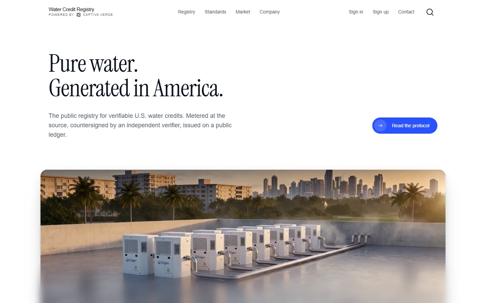
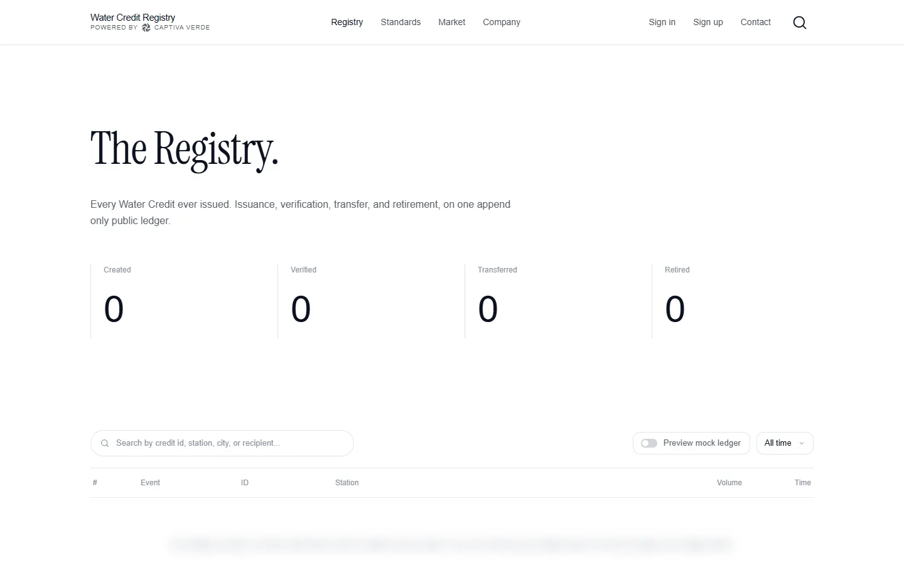
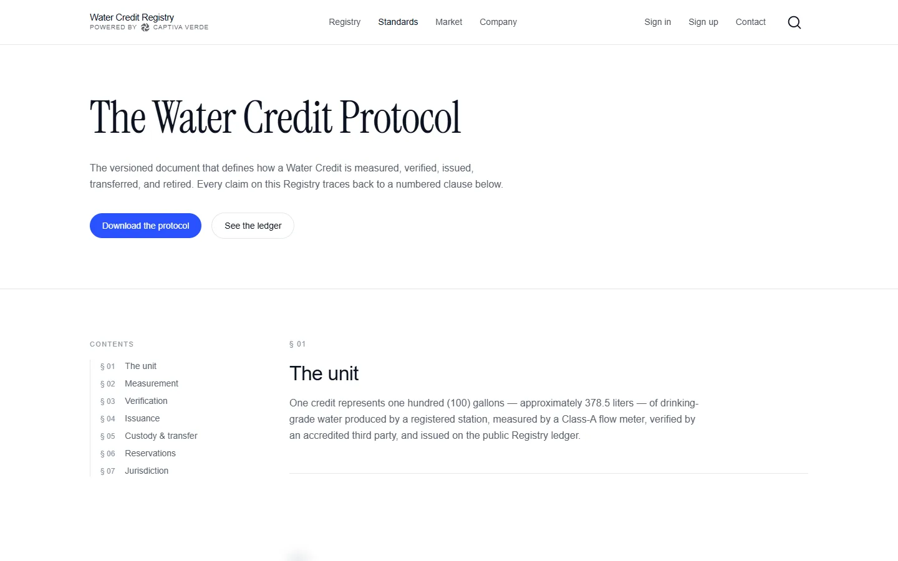
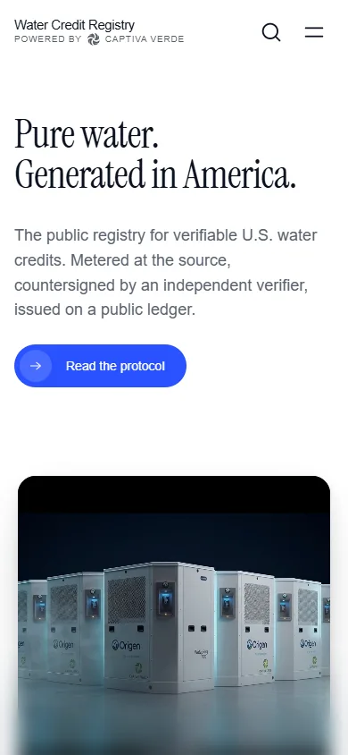

Water Credit Registry

Water Credit Registry is the public record for U.S. water credits, stewarded by Captiva Verde. Pure water generated at registered stations is metered at the source, countersigned by an independent verifier and issued on a public ledger anyone can read.
Product context
A credit is only worth what anyone can check.
The registry publishes everything a buyer, a generator or a skeptic needs: the ledger itself, the stations behind it, and a numbered, dated protocol open to public review.
COET's contribution
Brand
The registry's identity as a public institution, calm and legible, powered by Captiva Verde.
Web
The public site: the registry, the standard, the market and the company.
Engineering
The engineering behind the public registry site.
The registry
Every credit ever issued, on one public ledger.
Issuance, verification, transfer and retirement, searchable by credit, station, city or recipient.

The standard
A public, versioned protocol.
The Water Credit Protocol defines the unit, the metering standard, the verification workflow and the retirement rule. Every clause is numbered, dated and open to public review.


Key features
- 01
Metered at the source
Each gallon measured on the machine, then signed and streamed to the ledger.
- 02
Independent verification
Every credit countersigned by an independent verifier.
- 03
Public ledger
Issuance through retirement, open to anyone.
- 04
Stations map
Registered stations, from the flagship onward.
- 05
Open protocol
Numbered, dated, versioned clauses.
- 06
Market
Buying credits, a path for generators, and a terminal.